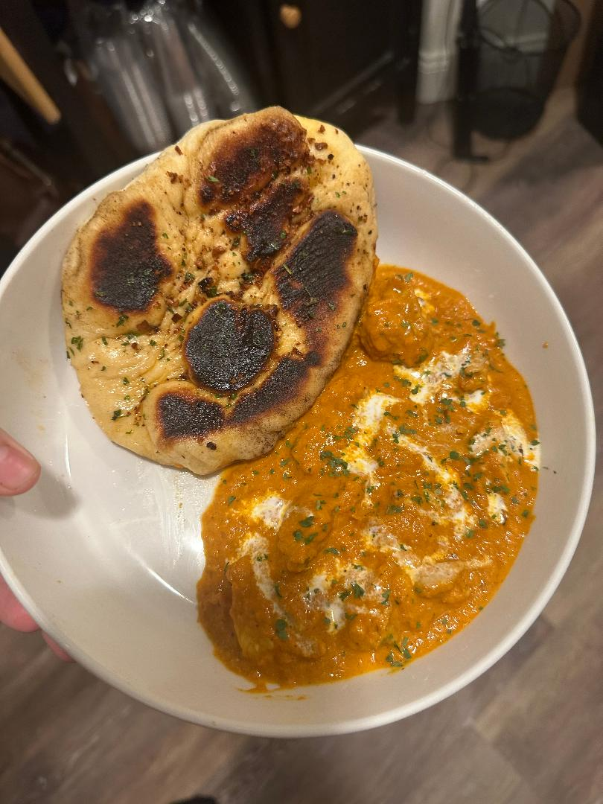

Simple Naan

Description
Made this delicious fluffy Naan the other day paired with a delicious Butter Chicken, but I was slamming down the Naan like no other. The image above is of course it paired with the chicken, but we will not be covering that in this.
Ingredient List and Tools
Tools to Make Life Easier
- Cast Iron Skillet
- Couple Mixing Bowl
- Rubber Spatula
- 1 tsp instant/rapid-rise yeast
- 1/2 cup warm tap water
- 1 tbsp white sugar
- 2 tbsp whole milk
- 1 1/2 tbsp whisked egg
- 1 3/4 cup bread flour (all-purpose)
- 2 tbsp ghee or unsalted butter (melted)
Steps
- Mix the yeast with the warm water and sugar in small bowl and wrap and leave until foamy.
- Whisk the egg and milk together
- Add flour and salt to a separate bowl/sift them together (not that important to me but who am I)
- Make a well in the flour, and add the yeast mixture, then the butter and egg mixture. Mix that all together with a rubber spatula (or any or hell even your hands like I did).
Once the flour is basically all mixed in start to bring it together into a ball shape. No kneading is required!
- Time for the proof- Cover the bowl and leave it on the counter for 1 - 1.5 hrs until it looks around double in size.
- Cut into 6 even pieces and shape back into balls. To do this I like to flour my hands up well and press down and tuck the sides up so it almost looks like a dumpling and then roll it in hands.
- Time for proof 2! Place the 6 balls on a lightly floured tray and throw a dash of flour on top (literally a dash and sometimes i like to smooth it out? does not matter too much I have seen). Cover lightly with a towel, any clean dish towel will work (my girlfriend bought IKEA fruit looking ones and they work perfect). Leave for a rough 15 minutes or until about 50% bigger.
- Time to roll them out also maybe refer to next step to take on a challenge for more efficient workflow, if you are like me and said "ah shit I don't have a bread roller" just use a glass cup or plastic and rub some flour on the outside and easy pickin's. Lightly flour a tray or any surface you have been using, flatten the balls with your hands and then start rolling them out to thin....but not too thin. Think a nice flat surface that could hold some chicken on there without being absolutely useless. SIZE DOESN'T MATTER...(that much)
- Heat up that skillet, if already well seasoned. If not, rub a light layer of oil or throw some more butter if you are lazy asf (a reasonable amount not a massive glob, but also more than enough to butter a piece of bread). Set over high heat until you see wisps of smoke. Don't burn your house down though, open a window so someone can get in i